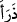
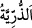
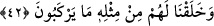

“Onların zürriyetlerini” ticaretleri için gönderdikleri büyük çocuklarını ya da
onların beraberlerinde bulunan yolculuğa gücü olmayan küçük çocuklarını ve
kadınlarını kendileriyle ve başkalarıyla birlikte “dopdolu bir gemide taşımamız da
onlar için” Mekke halkı için kudretimizin kemaline delâlet eden “büyük bir ibrettir.”
el-Kâmûs’ta der ki: “__WORD__” yarattı ve birşey çok oldu demektir. İnsan ve cinlerin nesline
“__WORD__ (zürriyet)” denilmesi de bu köktendir.” Râğıb der ki: “Zürriyyet örfte büyük
küçük çocukların hepsi için kullanılsa da aslında küçük çocuklar demektir. Tekil ve
çoğul olarak kullanılmakla birlikte aslolan çoğul olarak kullanılmasıdır.” Bu kelime
özellikle çocuklarla karışık olduğunda mecazen kadınlar için de kullanılır. Bu, mahallin
orada bulunanın ismiyle isimlendirilmesi yoluyladır. Çünkü kadınlar zürriyyetin
tarlalarıdır. Nitekim Hz. Ömer (r.a.)’tan rivâyet edilen bir hadîste şöyle buyrulmuştur:
“Zürriyyetle, yani kadınlarla hac yapınız.” Başka bir hadiste ise Rasûlullah (s.a.)
zürriyetlerin, yani kadınların öldürülmesini yasaklamıştır.[142]
el-Müfredât’ta geçtiği üzere “__WORD__ nefisleri dolduran düşmanlıktır. Deniz ve
geminin insanların emrine âmâde kılınması kendileri için de bir nimet olduğu halde
“zürriyet” kelimesinin insanların deniz yolculuğunda beraberlerinde bulunan zayıflara
tahsisi, onların gemilerde yerleşmelerinin daha meşakkatli ve orada tutunmaları daha
hayret verici olduğu içindir.
42. Onlar için, bunun gibi binecekleri başka şeyler de yarattık.
“Onlar için, bunun gibi” gemiye benzer şeylerden “binecekleri başka şeyler”
develer “de yarattık.” Çünkü develer karanın gemileridir.
Âyette “__WORD__ kelimesinin harf-i ta’rîfi cins içindir. Çünkü âyetten maksad yeniden
diriltmenin (ba’s) sıhhat ve imkânını beyân ederek Mekkeli’ler aleyhine delil
getirmektir. Allah Teâlâ onlara evvelâ ölü yeri diriltip toprağı onların maîşet ve geçim
sebebi yaptığını delil getirmiştir. Sonra rüzgarları, denizleri deniz ticaretinde
faydalanacakları şekilde bu denizlerde yürüyüp giden gemileri âmâde kılmasını delil
olarak sunmuştur. Onlar bu ticaret ve sehayatlerinde kendileri için taşınmaları önemli
olan kadınları ve çocukları da yanlarına alırlar. Nitekim Allah Teâlâ şöyle buyuruyor:
“Onları, (çeşitli nakil vasıtaları ile) karada ve denizde taşıdık.” (el-İsra 17/70).
Burada “__WORD__ kelimesindeki harf-i târifin ahd-i haricî için olduğu, yani bilinen bir
gemiyi ifade ettiği de söylenmiştir. Kasdedilen gemi ise “Gözlerimizin önünde ve
vahyimiz (emrimiz) uyarınca gemiyi yap.” (Hûd, 11/37) âyetinde zikredilen Nuh
(a.s.)’ın gemisidir. Buna göre mânâ şöyle olur: Yani biz onların ve suda yaşamayan
diğer canlıların zürriyetlerini, yâni kıyamete kadar gelecek çocuklarını o dolu gemide